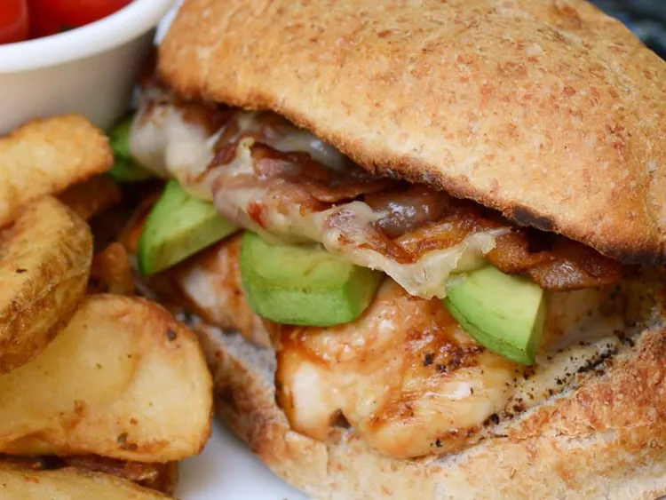

Indulge in the delectable flavors of a homemade Chicken Burger, where juicy and succulent chicken patty meets a medley of fresh ingredients for a burger experience that's simply irresistible. The star of this culinary delight is a tender and seasoned chicken patty, perfectly grilled to perfection to lock in its natural juiciness. Nestled inside a soft, toasted bun, it's complemented by crisp lettuce, ripe tomatoes, and a slice of creamy cheese that meld together to create a symphony of textures and tastes. To add a zesty kick, a dollop of tangy mayo or your favorite sauce is the finishing touch that elevates this burger to a true taste sensation. Whether you're grilling up a batch for a weekend barbecue or craving a satisfying weeknight dinner, the Chicken Burger is a mouthwatering choice that satisfies your burger cravings with a poultry twist
Creating your very own Chicken Burger is a breeze, and it allows you to tailor it to your personal preferences. Start by crafting the perfect chicken patty, seasoning it with your favorite herbs and spices to infuse it with flavor. Grill it to perfection or cook it indoors on a stovetop – the choice is yours. Then, assemble your burger with a variety of toppings and condiments, from crispy bacon and sautéed onions to avocado slices and spicy jalapeños. The beauty of the Chicken Burger lies in its versatility, making it a delicious canvas for your culinary creativity. Whether enjoyed with friends at a backyard barbecue or savored as a quick weeknight dinner, this Chicken Burger is a mouthwatering masterpiece that never fails to satisfy.